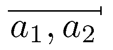

Notaciones matemáticas especiales
Aquí tenemos tres muestras de diferentes notaciones matemáticas especiales, que normalmente los editores de fórmulas no pueden generar, y que con TEX es posible siempre que se escriba el código correspondiente. Las notaciones mostradas no se pueden crear directamente con el TEX, estándar, pero sus capacidades de programación permiten extenderlo, y eso es justamente lo que he hecho para estos ejemplos.
No sólo es posible la extensión, sino que además cada aparición en el texto de estas notaciones ya se crea directamente a partir de una orden y por tanto la uniformidad tipográfica está garantizada. Más aun, si en un momento dado fuera necesario corregir en algo estas notaciones, se cambiaria de forma inmediata y globalmente en todo el documento: eso implica, además de la uniformidad total, rapidez y economía en el proceso de composición de un libro.
El primer ejemplo es la notación de intervalos ideada por William Feller y que aparece en sus libros de probabilidad. Una línea abarca el límite inferior y el superior, y un pequeño trazo indica que es cerrado por ese lado (la ausencia indica que es abierto).

Como segundo ejemplo, tenemos la representación de número complejos en forma de módulo-argumento (una de la diferentes posibilidades notacionales de esta representación), y que por limitaciones tipográficas no es raro ver así:
Sin embargo, eso es un intento de emular la notación correcta:
Para finalizar, supongamos que queremos introducir una notación para representar el conjunto de las raíces cuadradas de un número (es decir, tanto la negativa como la positiva). Una posible notación es:
Naturalmente, las posibilidades no se limitan a estos ejemplos. Si necesita una notación especial, ya puede conseguirla.
Y más
No todo es crear notaciones matemáticas especiales. También es preciso que las notaciones más usuales se compongan adecuadamente sin las faltas que se ven con cierta frecuencia. Ortotipografía y notaciones matemáticas es una guía sobre notaciones matemáticas y su correcta composición tipográfica (PDF).